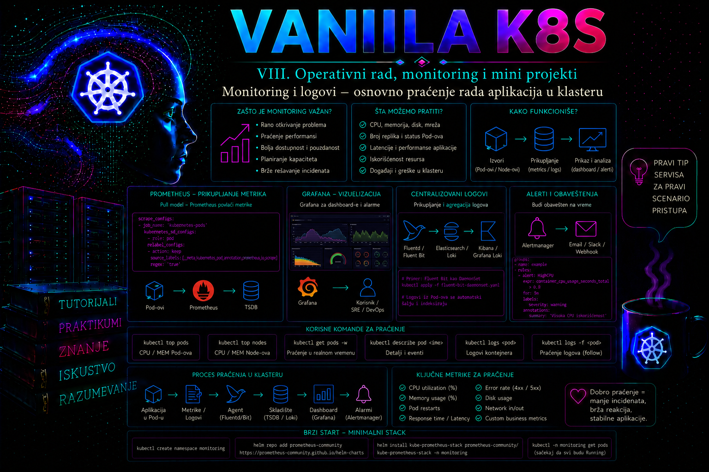

Vanilla Kubernetes

Kubernetes ne može sam da zaključi da li aplikacija ispunjava poslovna očekivanja samo na osnovu toga što je pod u stanju Running. Takvo stanje potvrđuje da je pod raspoređen na čvor i da su njegovi kontejneri pokrenuti, ali ne potvrđuje da aplikacija pravilno obrađuje zahteve, da nema grešaka, da je odziv prihvatljiv ili da resursi nisu pred iscrpljivanjem. Zbog toga administrator mora da poveže više izvora podataka: stanje Kubernetes objekata, događaje, potrošnju resursa, aplikacione logove, sistemske logove i, u produkcionom okruženju, istorijske metrike, alarme i distribuirane tragove.
Osnovno praćenje počinje komandama kubectl get, kubectl describe, kubectl logs i kubectl top. One omogućavaju brzo utvrđivanje trenutnog stanja i često su dovoljne za početnu trijažu incidenta. Ipak, njihov rezultat uglavnom predstavlja trenutni ili kratkotrajan pogled. Produkcioni monitoring zahteva centralizovano čuvanje podataka, kontrolisanu retenciju, korelaciju između komponenti i pravila upozoravanja. Administrator zato mora jasno da razlikuje interaktivnu dijagnostiku od trajnog sistema observabilnosti.
Monitoring, observabilnost i administratorska dijagnostika
Monitoring odgovara na unapred poznata pitanja: da li je broj dostupnih replika dovoljan, da li CPU prelazi prag, koliko HTTP zahteva završava greškom i da li je popunjenost diska blizu kritične vrednosti. Observabilnost je širi koncept. Ona omogućava da se na osnovu izlaznih podataka sistema istraže i problemi koji nisu unapred predviđeni. Uobičajena tri stuba observabilnosti jesu metrike, logovi i tragovi, ali Kubernetes administrator u praksi mora da uključi i stanje objekata, događaje, konfiguraciju, promene verzija i podatke kontrolne ravni.
- Metrike predstavljaju numeričke vrednosti kroz vreme, kao što su potrošnja CPU-a, memorije, broj zahteva, trajanje odgovora ili broj neuspešnih operacija. Pogodne su za grafikone, trendove, alarme i planiranje kapaciteta.
- Logovi predstavljaju zapise pojedinačnih događaja. Omogućavaju pregled poruka aplikacije, grešaka, identifikatora zahteva i konteksta u kojem se problem dogodio.
- Tragovi prate izvršenje zahteva kroz više servisa. Posebno su važni kod mikroservisnih sistema, ali nisu zamena za metrike i logove.
- Kubernetes događaji prikazuju odluke i probleme koje registruju scheduler, kubelet, kontroleri i druge komponente. Korisni su za dijagnostiku neuspelog raspoređivanja, povlačenja image-a, mountovanja volumena i probe provera.
Administratorska dijagnostika obično počinje od simptoma i prelazi sa šireg na uži nivo. Najpre se proveravaju namespace, Deployment, ReplicaSet, podovi i Service. Zatim se pregledaju događaji, probe, restartovanja, potrošnja resursa i logovi odgovarajućeg kontejnera. Tek nakon utvrđivanja sloja na kojem problem nastaje prelazi se na čvor, mrežni dodatak, skladište, DNS, ingress kontroler ili kontrolnu ravan. Nasumično menjanje konfiguracije pre formiranja početnog snimka stanja otežava analizu i može ukloniti najvažnije dokaze.
Stanje Kubernetes objekata i događaji
Komanda kubectl get prikazuje sažeto stanje objekata, dok kubectl describe daje detalje specifikacije, statusa, uslova i povezanih događaja. Administrator ne treba da posmatra samo kolonu STATUS. Za Deployment su važni željeni, ažurirani, spremni i dostupni podovi. Za pod su važni uslovi PodScheduled, Initialized, ContainersReady i Ready, broj restartovanja, razlog čekanja ili prekida kontejnera i čvor na kojem je pod pokrenut.
kubectl get deployment,pod,service -n prod-app -o wide
kubectl describe deployment web-api -n prod-app
kubectl describe pod web-api-7c9f6c8d7b-x4k2m -n prod-appDogađaji su objekti sa ograničenim vremenom čuvanja i ne treba ih tretirati kao trajni audit zapis. Njihova vrednost je najveća tokom ili neposredno nakon problema. Sortiranje po vremenu olakšava pregled redosleda događaja:
kubectl get events -n prod-app --sort-by=.metadata.creationTimestamp
kubectl events -n prod-app --for deployment/web-api
Poruke kao što su FailedScheduling, FailedMount, ErrImagePull, ImagePullBackOff i Unhealthy predstavljaju početnu tačku, a ne konačnu dijagnozu. Na primer, Pending pod može biti posledica nedostatka CPU-a, neodgovarajućih taint i toleration pravila, neusaglašene node affinity politike ili nedostupnog PersistentVolume-a. Administrator mora pročitati polja Reason i Message, proveriti povezane objekte i potvrditi uzrok pre promene.
Događaji se mogu ponavljati, pa polje sa brojem ponavljanja pokazuje da li je problem bio prolazan ili i dalje traje. Jedan neuspešan probe pokušaj tokom pokretanja aplikacije može biti prihvatljiv, dok kontinuirani događaji Unhealthy, rast broja restartovanja ili nedostupne replike zahtevaju reakciju. Normalno stanje zavisi od dizajna aplikacije, definisanih SLO ciljeva i očekivanog obrasca opterećenja.
Metrike resursa i komanda kubectl top
Komanda kubectl top prikazuje nedavnu potrošnju CPU-a i memorije za čvorove i podove. Podatke dobija preko Kubernetes Metrics API-ja, koji se u većini klastera obezbeđuje komponentom Metrics Server. Metrics Server prikuplja podatke sa kubelet-a, čuva ih kratkotrajno u memoriji i namenjen je prvenstveno osnovnom prikazu potrošnje i ugrađenim mehanizmima automatskog skaliranja. On nije sistem za dugoročnu retenciju, poslovne dashboarde, složene upite ili istorijsku analizu.
kubectl top nodes
kubectl top pods -n prod-app
kubectl top pods -n prod-app --containers
kubectl top pod -n prod-app --sort-by=cpu
kubectl top pod -n prod-app --sort-by=memory
CPU se obično prikazuje u milicore jedinicama. Vrednost 250m predstavlja četvrtinu jednog CPU jezgra. Memorija se prikazuje kao radni skup memorije, najčešće u MiB ili GiB. Dobijene vrednosti treba porediti sa zahtevima i ograničenjima iz specifikacije poda, a ne samo sa fizičkim kapacitetom čvora. Pod koji koristi 450 MiB nema isto značenje ako mu je limit 512 MiB i ako mu je limit 4 GiB.
kubectl get pod web-api-7c9f6c8d7b-x4k2m -n prod-app \
-o jsonpath='{range .spec.containers[*]}{.name}{" requests="}{.resources.requests}{" limits="}{.resources.limits}{"\n"}{end}'Visok CPU može značiti očekivano opterećenje, neefikasan kod, previše zahteva ili prenizak limit koji izaziva throttling. Rast memorije može biti normalan cache, ali i curenje memorije. Kubernetes Metrics API sam ne pruža dovoljan vremenski kontekst da bi se te pojave razlikovale. Potrebne su istorijske metrike i poređenje sa brojem zahteva, latencijom, restartovanjima i aplikacionim događajima.
Kada kubectl top vrati poruku Metrics API not available, administrator proverava da li je API servis registrovan, da li Metrics Server radi i da li može da komunicira sa kubelet endpointima:
kubectl get apiservice v1beta1.metrics.k8s.io
kubectl get deployment,pod -n kube-system -l k8s-app=metrics-server
kubectl logs -n kube-system deployment/metrics-server --tail=100Ne treba automatski dodavati opciju kojom se isključuje provera kubelet TLS sertifikata. Takvo podešavanje smanjuje bezbednost i može prikriti problem sa sertifikatima ili imenima čvorova. U produkciji se prvo proveravaju trust chain, adrese čvorova, mrežna dostupnost i podržana konfiguracija distribucije.
Arhitektura logovanja u Kubernetes-u
Preporučeni obrazac za kontejnerske aplikacije jeste pisanje logova na standardni izlaz i standardni izlaz za greške. Container runtime ih zapisuje u fajlove na čvoru, kubelet upravlja rotacijom, a Kubernetes API omogućava pristup preko komande kubectl logs. Aplikacija tada ne mora da poznaje lokaciju centralnog log sistema niti da upravlja lokalnim log fajlovima.
Na Linux čvorovima logovi podova se tipično nalaze ispod direktorijuma /var/log/pods, dok /var/log/containers obično sadrži simboličke veze sa imenima koja olakšavaju identifikaciju namespace-a, poda i kontejnera. Tačna implementacija zavisi od container runtime-a i Kubernetes distribucije. Direktan pristup čvoru treba koristiti samo kada Kubernetes API nije dovoljan ili kada se istražuje problem kubelet-a, runtime-a ili lokalnog skladišta.
Logovi na čvoru nisu trajna arhiva. Ako je pod uklonjen sa čvora, njegovi lokalni logovi mogu biti izgubljeni. Kada se kontejner restartuje, kubelet uobičajeno omogućava pristup logu prethodne instance, ali samo za ograničen broj prethodnih izvršenja. Zbog toga produkcioni klaster zahteva agent koji sa čvorova ili putem drugog podržanog modela prosleđuje logove u centralni sistem, kao što su Loki, Elasticsearch, OpenSearch ili platforma dobavljača.
Centralizovani sistem treba da obezbedi indeksiranje, retenciju, kontrolu pristupa, zaštitu od izmene, pretragu po Kubernetes metapodacima i povezivanje sa alarmima. Izbor sistema zavisi od količine logova, zahteva usklađenosti, troškova skladištenja i operativnih kompetencija tima. Kubernetes ne isporučuje ugrađeno trajno skladište aplikacionih logova.
Rad sa komandom kubectl logs
Komanda kubectl logs čita log iz jednog ili više kontejnera kroz Kubernetes API. Kod poda sa jednim kontejnerom dovoljan je naziv poda. Kod više kontejnera treba navesti kontejner opcijom -c, osim kada se namerno koriste opcije za sve kontejnere.
kubectl logs -n prod-app web-api-7c9f6c8d7b-x4k2m
kubectl logs -n prod-app web-api-7c9f6c8d7b-x4k2m -c web
kubectl logs -n prod-app web-api-7c9f6c8d7b-x4k2m --all-containers=trueZa incidentnu analizu treba ograničiti vremenski opseg i količinu rezultata. Čitanje kompletnog loga velikog broja podova opterećuje API, otežava analizu i može izložiti više podataka nego što je potrebno:
kubectl logs -n prod-app deployment/web-api --since=15m --tail=200
kubectl logs -n prod-app -l app=web-api --all-containers=true \
--since=10m --prefix=true
kubectl logs -n prod-app deployment/web-api -f --since=2m
Opcija --previous je posebno važna kada je kontejner restartovan. Bez nje se prikazuje samo log trenutno aktivne instance, pa uzrok prethodnog pada može ostati nevidljiv:
kubectl logs -n prod-app web-api-7c9f6c8d7b-x4k2m \
-c web --previous --tail=200
Ako --previous vrati da prethodna instanca ne postoji, to može značiti da kontejner nije restartovan, da je pod zamenjen novim podom ili da traženi pod više nije na istom čvoru. Administrator tada proverava ReplicaSet, vreme kreiranja podova, događaje, centralni log sistem i eventualne node-level zapise.
Logovi moraju sadržati dovoljno konteksta da podrže dijagnostiku, ali ne smeju sadržati lozinke, tokene, session kolačiće, privatne ključeve ili kompletne lične podatke. Pre povećanja nivoa logovanja treba proceniti uticaj na performanse, troškove skladištenja i bezbednost. Debug nivo u produkciji treba uključivati vremenski ograničeno, uz odobrenje, plan povratka i evidenciju promene.
Sistemski logovi i granice ovlašćenja
Aplikacioni administrator najčešće radi u jednom ili više namespace-ova i nema pristup logovima kontrolne ravni ili čvorova. To je ispravan model najmanjih privilegija. Za čitanje logova podova RBAC mora dozvoliti resurs pods/log. Pravo čitanja podova samo po sebi ne mora automatski obezbediti čitanje njihovih logova.
kubectl auth can-i get pods -n prod-app
kubectl auth can-i get pods/log -n prod-app
kubectl auth can-i list events -n prod-app
kubectl auth can-i get nodes
kubectl auth can-i get nodes/metrics
U kubeadm i sličnim instalacijama komponente kontrolne ravni mogu raditi kao static podovi, pa se njihovi logovi čitaju preko kubectl logs u namespace-u kube-system, ako korisnik ima odgovarajuća prava. Kubelet i container runtime često rade kao systemd servisi i njihovi zapisi se pregledaju na čvoru:
sudo journalctl -u kubelet --since "15 minutes ago"
sudo journalctl -u containerd --since "15 minutes ago"Ove komande zahtevaju administratorski pristup operativnom sistemu čvora. Ne treba ih izvršavati preko neodobrenih naloga niti menjati nivo sistemskog logovanja bez procedure za upravljanje promenama. U upravljanim Kubernetes servisima korisnik možda nema pristup kontrolnoj ravni ili čvorovima; tada se koriste logovi, dijagnostički paketi i servisi koje izlaže dobavljač platforme.
Produkcioni monitoring i upozoravanje
Osnovne komande ne zamenjuju produkcioni monitoring. Uobičajena arhitektura koristi Prometheus ili kompatibilan sistem za prikupljanje vremenskih serija, exporter komponente za sistemske metrike, kube-state-metrics za stanje Kubernetes objekata, Grafana ili drugi sistem za vizuelizaciju i Alertmanager ili odgovarajuću platformsku komponentu za usmeravanje alarma.
Metrike infrastrukture treba povezati sa aplikacionim indikatorima. Visok CPU bez porasta latencije i grešaka može biti očekivano iskorišćenje resursa. Normalan CPU uz rast HTTP grešaka može ukazivati na nedostupnu bazu, pogrešnu konfiguraciju ili spoljašnju zavisnost. Alarm treba da predstavlja stanje koje zahteva ljudsku akciju, a ne svaku kratkotrajnu promenu.
Kvalitetno pravilo upozoravanja definiše signal, prag, trajanje, ozbiljnost, vlasnika, runbook i očekivanu reakciju. Na primer, alarm za Deployment može zahtevati reakciju kada broj dostupnih replika ostane manji od željenog duže od pet minuta. Kratak pad jedne replike tokom kontrolisanog rollout-a ne mora biti incident ako je dostupnost servisa očuvana.
Za aplikacije se često prate stopa zahteva, stopa grešaka, latencija i zasićenje resursa. Za Kubernetes sloj prate se nedostupne replike, restartovanja, OOM prekidi, pending podovi, pritisak na čvorovima, popunjenost persistentnih volumena i zdravlje komponenti kontrolne ravni. Pragovi moraju biti zasnovani na SLO ciljevima, baznoj liniji i kapacitetu sistema, a ne na proizvoljnim procentima.
Od sirove metrike do operativnog signala
Metrika postaje operativni signal tek kada joj se odrede značenje, vlasnik, očekivani opseg, vremenski prozor i radnja koja sledi posle odstupanja. Bazna linija nije jedna prosečna vrednost, već opis normalnog ponašanja u reprezentativnim periodima: radnim i neradnim danima, vršnom opterećenju, planiranim batch poslovima, rollout-u i sezonskim promenama. Zbog toga se pre definisanja praga posmatra dovoljno dug period, označavaju poznate promene i odvojeno analiziraju percentili, minimumi, maksimumi i stopa promene. Prosek može prikriti kratke, ali poslovno važne skokove latencije ili grešaka.
Korisna veza između poslovnog cilja i tehničkog alarma gradi se redosledom: korisničko očekivanje, SLI, SLO, error budget, upozorenje i runbook. SLI je merljivi indikator, na primer udeo uspešnih HTTP zahteva ili 95. percentil latencije. SLO je cilj tog indikatora u određenom periodu. Error budget je dozvoljeni deo neuspeha. Alarm treba da otkrije prebrzo trošenje budžeta ili neposrednu ugroženost korisnika, a ne samo neuobičajenu internu vrednost bez posledice.
| Nivo | Primer signala | Namena | Tipična reakcija |
|---|---|---|---|
| Korisnički simptom | Rast stope 5xx odgovora ili latencije | Page alarm vezan za SLO | Odmah ograničiti uticaj i pokrenuti runbook. |
| Kapacitet i zasićenje | CPU throttling, memory pressure, skoro pun PVC | Rano upozorenje i planiranje | Proveriti trend, requests/limits i rok do iscrpljenja. |
| Uzrok ili dijagnostički trag | Restart kontejnera, neuspešan scrape, DNS greške | Usmeravanje istrage | Korelirati sa simptomom; ne slati svaki događaj dežurnom timu. |
| Promena | Nova revizija, ConfigMap ili pravilo alarma | Korelacija i audit | Proveriti vremensku podudarnost i, po potrebi, rollback. |
Izvori metrika: nisu međusobno zamenljivi
Metrics Server, kube-state-metrics i Prometheus rešavaju različite probleme. Metrics Server agregira kratkotrajne CPU i memorijske podatke koje preuzima sa kubelet endpointa /metrics/resource i izlaže ih preko agregiranog API-ja metrics.k8s.io. Kube-state-metrics sluša Kubernetes API i pretvara stanje objekata u Prometheus metrike; on ne meri stvarnu CPU ili memorijsku potrošnju. Prometheus periodično prikuplja označene vremenske serije sa target-a, čuva istoriju i izvršava PromQL, recording i alerting pravila. Instalacija bilo koje od ovih komponenti nije deo osnovnog Kubernetes jezgra i mora biti projektovana, zaštićena, nadgledana i nadograđivana kao platformska usluga.
| Komponenta | Izvor i podaci | Primarna namena | Ograničenje |
|---|---|---|---|
| Metrics Server | Kubelet resource metrics; CPU i memorija čvora/poda | kubectl top i ugrađeni autoscaling pipeline |
Nema produkcionu istorijsku bazu, kompleksne upite ni poslovne alarme. |
| kube-state-metrics | Objekti i status iz Kubernetes API-ja | Replike, uslovi, requests/limits, faze i generacije objekata | Prikazuje deklarisano/API stanje, ne potrošnju procesa. |
| Prometheus ili kompatibilan sistem | Scrape endpointi, exporter-i i aplikacione metrike | Istorija, PromQL, dashboardi, recording i alerting pravila | Zahteva plan kapaciteta, HA model, retenciju i zaštitu pristupa. |
Komponente kontrolne ravni i mnogi Kubernetes dodaci izlažu metrike u Prometheus tekstualnom formatu, ali dostupnost endpointa, autentikacija i stabilnost pojedinačnih metrika zavise od komponente i verzije. Pre nadogradnje treba proveriti deprecations i oznaku stabilnosti metrika; dashboard ili alarm koji zavisi od uklonjene ili preimenovane metrike može utihnuti bez kvara aplikacije. Odsustvo serije mora zato biti tretirano eksplicitno, uz alarm za zdravlje samog monitoring pipeline-a.
Prometheus model, tipovi metrika i kardinalnost
Prometheus vremenska serija određena je nazivom metrike i kompletnim skupom labela. Counter monotono raste do restarta procesa i za njega se obično računaju rate() ili increase(). Gauge može rasti i opadati, pa je prikladan za trenutni broj zahteva, temperaturu ili iskorišćenu memoriju. Histogram raspoređuje opažanja u bucket-e i omogućava agregiranje i izračunavanje percentila funkcijom histogram_quantile(); summary izračunava kvantile na strani klijenta i teže se agregira između instanci. Izbor tipa određuje koji je upit matematički ispravan.
sum by (namespace, workload) (
rate(http_requests_total{status=~"5.."}[5m])
)
/
sum by (namespace, workload) (
rate(http_requests_total[5m])
)Labele ne smeju sadržati neograničene vrednosti kao što su korisnički ID, puni URL, UUID zahteva, timestamp ili tekst greške. Svaka nova kombinacija labela stvara novu seriju i troši memoriju, skladište i vreme upita. Takav kontekst pripada logovima ili tragovima. Pre uvođenja metrike procenjuju se broj target-a, broj mogućih vrednosti svake labele i proizvod tih dimenzija. Kardinalnost je i troškovni i dostupnosni rizik: preopterećen monitoring sistem može izgubiti upravo podatke potrebne tokom incidenta.
Projektovanje alarma i tok obaveštenja
U Prometheus modelu pravilo prvo prelazi u stanje pending kada izraz postane istinit. Tek kada uslov neprekidno traje koliko određuje for, alarm prelazi u firing. Opciono polje keep_firing_for može sprečiti prebrzo razrešavanje kod kratkog nestanka signala. Alertmanager zatim grupiše, deduplikuje, inhibira, utišava i usmerava obaveštenja. Silence je vremenski ograničena operativna odluka sa vlasnikom i razlogom; nije način da se trajno prikrije loše pravilo. Inhibition sprečava niz posledičnih alarma, na primer alarme za sve workload-e kada je potvrđen pad celog klastera.
groups:
- name: portal-availability
interval: 30s
rules:
- alert: PortalDeploymentReplicasUnavailable
expr: |
kube_deployment_status_replicas_available{namespace="obs-lab",deployment="portal"}
<
kube_deployment_spec_replicas{namespace="obs-lab",deployment="portal"}
for: 5m
labels:
severity: warning
team: portal
annotations:
summary: "Portal nema sve dostupne replike"
description: "Dostupne replike su ispod željenog broja najmanje pet minuta."
runbook_url: "https://INTERNA-LOKACIJA/runbooks/portal-replicas"
Manifest iznad je generički Prometheus rule fajl, a ne Kubernetes objekat. Ako se koristi Prometheus Operator, isto pravilo se smešta u CRD PrometheusRule, čija dostupnost, API verzija, namespace selekcija i RBAC zavise od instalirane verzije Operatora. Placeholder INTERNA-LOKACIJA mora se zameniti odobrenom internom putanjom. Pravilo se ne primenjuje naslepo: izraz se prvo izvršava kao upit, proverava se ponašanje kada serija nedostaje, zatim se validira sintaksa i radi kontrolisani test okidanja i razrešenja.
promtool check rules portal-alerts.yaml
promtool test rules portal-alerts-tests.yaml
promtool se izvršava na administratorskoj radnoj stanici ili u odobrenom CI procesu sa verzijom usklađenom sa Prometheus serverom. Prva komanda je read-only sintaksna i semantička provera fajla; druga pokreće definisane test-serije i očekivana stanja alarma. Tek posle uspešnog testa sledi promena kroz GitOps ili drugi kontrolisani deployment proces. Direktno menjanje aktivnog ConfigMap-a nije preporučeni produkcioni tok.
Zdravlje samog monitoring sistema
Sistem koji meri druge komponente mora imati sopstvene signale: uspešnost scrape-a, starost poslednjeg uzorka, trajanje evaluacije pravila, broj odbačenih uzoraka, WAL i storage greške, popunjenost diska, kašnjenje remote-write reda, neuspešna obaveštenja i dostupnost Alertmanager peer-ova. Prometheus HA parovi obično prikupljaju iste target-e radi dostupnosti, dok Alertmanager deduplikuje identična upozorenja; to nije isto što i automatski distribuirana baza vremenskih serija. Dugoročna retencija, globalni upiti i objektno skladište zahtevaju dodatno projektovanje ili kompatibilnu platformu.
Scrape endpointi često otkrivaju topologiju, nazive resursa i operativne detalje. Ne treba ih izlagati javnoj mreži. Pristup se ograničava mrežnim pravilima, autentikacijom i TLS-om gde ga komponenta podržava, a pristup dashboardima i upitima RBAC-om platforme. Tajne za notification receiver-e ne čuvaju se u otvorenim pravilima ili Git repozitorijumu. Retencija metrika i logova usklađuje se sa poslovnim, bezbednosnim i pravnim zahtevima; više podataka nije automatski bolja observabilnost.
Integrisani praktikum: dijagnostika aplikacije pomoću stanja, metrika i logova
Poslovni i tehnički kontekst. Interni portal odeljenja radi kao Deployment sa dve replike u namespace-u obs-lab. Operativni tim mora da uspostavi početnu proveru, potvrdi pristup logovima i metrikama, zatim kontrolisano izazove problem sa readiness proverom i dijagnostikuje ga bez prekida Service objekta. Scenario predstavlja tipičan incident u kojem je nova konfiguracija primenjena, ali podovi ne postaju spremni za saobraćaj.
Cilj. Administrator treba da implementira referentnu aplikaciju, potvrdi zdravo stanje, pronađe odgovarajuće logove i metrike, izazove bezbedan kvar readiness provere, identifikuje uzrok, izvrši rollback i dokumentuje merljive rezultate.
Referentno okruženje. Koristi se postojeći Vanilla Kubernetes klaster sa najmanje jednim schedulable worker čvorom, funkcionalnim DNS-om i pristupom javnom image registry-ju. Metrics Server treba da bude instaliran da bi koraci sa kubectl top vratili podatke. Radna stanica ima kubectl verziju podržanu za klaster i direktorijum ~/vanilla-k8s/40-monitoring. Verzije laboratorijskih image-a predstavljaju proverljivu referencu za vežbu; pre produkcione upotrebe organizacija ih odobrava, skenira i pin-uje digestom u internom registry-ju.
Potrebna prava. Korisnik mora imati pravo da kreira i menja Namespace, ConfigMap, Deployment i Service u laboratorijskom okruženju, da čita podove, događaje i pods/log, kao i da pristupi Metrics API-ju. U produkciji bi kreiranje namespace-a i promena Deployment-a mogli biti razdvojeni između platformskog i aplikacionog tima.
Preduslovi i početna provera. Pre promene proveravaju se aktivni kontekst, identitet korisnika, dostupnost klastera i Metrics API. Pogrešan kontekst može dovesti do promene pogrešnog klastera.
kubectl config current-context
kubectl auth whoami
kubectl get nodes
kubectl get apiservice v1beta1.metrics.k8s.io
mkdir -p ~/vanilla-k8s/40-monitoring
cd ~/vanilla-k8s/40-monitoring
APIService za metrike treba da ima stanje Available=True. Ako nije dostupan, praktikum se može nastaviti bez kubectl top rezultata, ali se nedostupnost evidentira kao neispunjen preduslov, a ne kao problem aplikacije.
-
Kreiranje namespace-a i referentne konfiguracije.
Namespace odvaja laboratorijske objekte od drugih aplikacija. ConfigMap sadrži statičku početnu stranicu i omogućava da se sadržaj montira u nginx kontejner bez izrade sopstvenog image-a.
Validacija: Svi objekti treba da budu kreirani bez serverske greške. Deklarativni fajl ostaje evidencija željenog početnog stanja.cat > 01-observability-app.yaml <<'EOF' apiVersion: v1 kind: Namespace metadata: name: obs-lab labels: purpose: monitoring-practice --- apiVersion: v1 kind: ConfigMap metadata: name: portal-content namespace: obs-lab data: index.html: | <!doctype html> <html lang="sr"> <head><meta charset="utf-8"><title>Observability portal</title></head> <body><h1>Portal je dostupan</h1></body> --- apiVersion: apps/v1 kind: Deployment metadata: name: portal namespace: obs-lab labels: app: portal spec: replicas: 2 revisionHistoryLimit: 5 selector: matchLabels: app: portal template: metadata: labels: app: portal spec: containers: - name: web image: nginx:1.27-alpine imagePullPolicy: IfNotPresent ports: - name: http containerPort: 80 resources: requests: cpu: 25m memory: 32Mi limits: cpu: 200m memory: 128Mi readinessProbe: httpGet: path: / port: http initialDelaySeconds: 2 periodSeconds: 5 timeoutSeconds: 2 failureThreshold: 3 livenessProbe: httpGet: path: / port: http initialDelaySeconds: 10 periodSeconds: 10 timeoutSeconds: 2 failureThreshold: 3 volumeMounts: - name: content mountPath: /usr/share/nginx/html/index.html subPath: index.html readOnly: true - name: activity-log image: busybox:1.36.1 imagePullPolicy: IfNotPresent command: - /bin/sh - -c args: - | while true; do echo "$(date -Iseconds) level=INFO component=activity-log message='portal pod active'" sleep 15 done resources: requests: cpu: 5m memory: 8Mi limits: cpu: 50m memory: 32Mi volumes: - name: content configMap: name: portal-content --- apiVersion: v1 kind: Service metadata: name: portal namespace: obs-lab spec: selector: app: portal ports: - name: http port: 80 targetPort: http EOF kubectl apply -f 01-observability-app.yamlkubectl get namespace obs-lab kubectl get configmap,deployment,service -n obs-lab kubectl rollout status deployment/portal -n obs-lab --timeout=120s -
Provera replika, podova i uslova spremnosti.
Deployment treba da ima dve dostupne replike. Prikaz podova sa čvorovima i IP adresama pomaže kasnijoj korelaciji problema.
Validacija: Deployment treba da prikazujekubectl get deployment portal -n obs-lab kubectl get pods -n obs-lab -l app=portal -o wide kubectl get pods -n obs-lab -l app=portal \ -o custom-columns='NAME:.metadata.name,READY:.status.containerStatuses[*].ready,RESTARTS:.status.containerStatuses[*].restartCount,NODE:.spec.nodeName'READY 2/2iAVAILABLE 2. Svaki pod treba da imaREADY 2/2, jer sadrži kontejnerewebiactivity-log. -
Pregled događaja i detalja jednog poda.
Najnoviji događaji potvrđuju raspoređivanje, povlačenje image-a i pokretanje kontejnera. Naziv jednog poda čuva se u promenljivoj radi doslednog korišćenja.
Validacija: Uslovexport PORTAL_POD="$(kubectl get pod -n obs-lab -l app=portal \ -o jsonpath='{.items[0].metadata.name}')" echo "$PORTAL_POD" kubectl describe pod "$PORTAL_POD" -n obs-lab kubectl get events -n obs-lab --sort-by=.metadata.creationTimestampReadytreba da budeTrue, broj restartovanja nula, a događaji ne treba da sadrže aktivne porukeFailedili ponavljajuće porukeUnhealthy. -
Čitanje logova oba kontejnera.
Nginx access log potvrđuje HTTP zahteve, dok pomoćni kontejner periodično emituje strukturisanu tekstualnu poruku. Kontejner se uvek navodi eksplicitno kako bi rezultat bio jednoznačan.
Validacija: Log kontejnerakubectl logs -n obs-lab "$PORTAL_POD" -c web --tail=20 kubectl logs -n obs-lab "$PORTAL_POD" -c activity-log --since=2m kubectl logs -n obs-lab -l app=portal -c activity-log \ --since=2m --prefix=trueactivity-logtreba da sadrži najmanje jednu porukuportal pod active. Nginx log može biti prazan dok se ne pošalje HTTP zahtev. -
Funkcionalna provera kroz Service.
Privremeni curl pod pristupa aplikaciji preko klasterskog DNS imena. Opcija
--rmuklanja testni pod po završetku.
Validacija: Izlaz treba da sadrži tekstkubectl run portal-client -n obs-lab --rm -i --restart=Never \ --image=curlimages/curl:8.10.1 \ -- curl -fsS http://portal.obs-lab.svc.cluster.local/Portal je dostupan. Nakon zahteva nginx log treba da sadrži uspešan HTTP odgovor:kubectl logs -n obs-lab -l app=portal -c web \ --since=5m --prefix=true -
Provera potrošnje resursa.
Metrike se proveravaju tek nakon što su podovi dovoljno dugo aktivni da Metrics Server prikupi podatke.
Validacija: Oba poda treba da imaju CPU i memorijske vrednosti. Kratkotrajno odsustvo metrika neposredno nakon kreiranja poda nije nužno kvar; ako traje više minuta, proverava se Metrics API.kubectl top pods -n obs-lab kubectl top pods -n obs-lab --containers kubectl top nodes -
Negativni test: uvođenje pogrešnog readiness porta.
Promena utiče samo na spremnost novih podova. Liveness provera ostaje ispravna, pa kontejneri ne bi trebalo da se restartuju. Ovo je kontrolisan test, ali se ne izvršava u produkciji bez odobrene promene i plana povratka.
Validacija: Deployment pokreće novi rollout, ali novi podovi ne postaju spremni. Komanda za status treba da se završi istekom vremena ili prijavom da rollout nije kompletan:kubectl patch deployment portal -n obs-lab --type='json' -p='[ { "op": "replace", "path": "/spec/template/spec/containers/0/readinessProbe/httpGet/port", "value": 8081 } ]'kubectl rollout status deployment/portal -n obs-lab --timeout=45s kubectl get deployment,replicaset,pod -n obs-lab -l app=portal -o wide -
Dijagnostika problema bez nagađanja.
Najpre se identifikuje novi nespreman pod, zatim se pregledaju uslovi, događaji i konfiguracija probe.
Očekivani rezultat: Događaji treba da sadržeexport NOT_READY_POD="$(kubectl get pods -n obs-lab -l app=portal \ --field-selector=status.phase=Running \ -o jsonpath='{range .items[*]}{.metadata.name}{" "}{range .status.conditions[?(@.type=="Ready")]}{.status}{"\n"}{end}{end}' \ | awk '$2=="False"{print $1; exit}')" echo "$NOT_READY_POD" kubectl describe pod "$NOT_READY_POD" -n obs-lab kubectl get pod "$NOT_READY_POD" -n obs-lab \ -o jsonpath='{.spec.containers[?(@.name=="web")].readinessProbe}{"\n"}' kubectl get events -n obs-lab --sort-by=.metadata.creationTimestampUnhealthyi poruku da povezivanje sa portom 8081 nije uspelo. Pod ostajeRunning, ali nijeReady. Broj restartovanja kontejnerawebtreba da ostane nula, što razlikuje readiness problem od liveness problema. -
Korelacija logova i Kubernetes događaja.
Nginx log ne mora sadržati grešku readiness provere jer zahtev nije stigao do nginx procesa na portu 80. Odsustvo aplikacione greške zato ne dokazuje da je pod zdrav.
Validacija: Pomoćni kontejner nastavlja da emituje logove, web proces radi, alikubectl logs -n obs-lab "$NOT_READY_POD" -c web --tail=50 kubectl logs -n obs-lab "$NOT_READY_POD" -c activity-log --tail=20 kubectl get pod "$NOT_READY_POD" -n obs-lab \ -o jsonpath='{range .status.containerStatuses[*]}{.name}{" ready="}{.ready}{" restarts="}{.restartCount}{"\n"}{end}'web ready=false. Uzrok se nalazi u konfiguraciji i događajima probe, a ne u padu aplikacionog procesa. -
Provera uticaja na Service.
Service treba da koristi samo spremne endpoint-e. Tokom RollingUpdate strategije stari spremni podovi mogu nastaviti da obrađuju saobraćaj, u zavisnosti od broja replika i rollout parametara.
Validacija: Funkcionalni zahtev i dalje treba da uspe ako je najmanje jedan stari spremni pod ostao dostupan. EndpointSlice ne treba da označi novi nespremni pod kao spreman endpoint. Time se potvrđuje da readiness provera štiti Service od slanja saobraćaja nevalidiranoj replici.kubectl get endpointslice -n obs-lab \ -l kubernetes.io/service-name=portal -o wide kubectl run portal-client-negative-test -n obs-lab --rm -i --restart=Never \ --image=curlimages/curl:8.10.1 \ -- curl -fsS --max-time 5 http://portal.obs-lab.svc.cluster.local/ -
Rollback na prethodnu reviziju.
Istorija rollout-a proverava se pre povratka. Rollback vraća prethodni pod template, uključujući ispravan imenovani port probe.
Validacija: Deployment ponovo treba da ima dve spremne i dostupne replike, bez novih ponavljajućihkubectl rollout history deployment/portal -n obs-lab kubectl rollout undo deployment/portal -n obs-lab kubectl rollout status deployment/portal -n obs-lab --timeout=120sUnhealthydogađaja:kubectl get deployment,pod -n obs-lab -l app=portal kubectl get events -n obs-lab --sort-by=.metadata.creationTimestamp kubectl run portal-client-final -n obs-lab --rm -i --restart=Never \ --image=curlimages/curl:8.10.1 \ -- curl -fsS http://portal.obs-lab.svc.cluster.local/
Merljivi kriterijumi prihvatanja. Deployment ima tačno dve dostupne replike; svi aplikacioni podovi prikazuju 2/2 spremnih kontejnera; broj restartovanja ostaje nula; Service vraća očekivanu HTML poruku; log pomoćnog kontejnera sadrži poruke iz poslednja dva minuta; nginx access log beleži testni zahtev; kubectl top pods vraća CPU i memoriju kada je Metrics API dostupan; negativni test proizvodi događaj Unhealthy; rollback vraća readiness stanje u roku od 120 sekundi.
Cleanup. Ako se laboratorija više ne koristi, namespace se briše tek nakon čuvanja potrebnih rezultata. Brisanje namespace-a uklanja sve objekte i njihove lokalno dostupne logove.
kubectl get all,configmap -n obs-lab
kubectl delete namespace obs-lab
kubectl get namespace obs-labPoslednja komanda treba da potvrdi da namespace više ne postoji. U produkcionom okruženju brisanje namespace-a je visokorizična i potencijalno destruktivna operacija; umesto toga se uklanjaju samo odobreni objekti iz deklarativnog izvora i prati se formalna procedura promene.
Tipične greške i njihovo razlikovanje
| Simptom | Verovatan sloj problema | Prva provera | Važna razlika |
|---|---|---|---|
Pod je Pending |
Scheduler, resursi, affinity, taint ili storage | kubectl describe pod |
Aplikacioni log još ne mora postojati jer kontejner nije pokrenut. |
ImagePullBackOff |
Registry, naziv image-a, mreža ili imagePullSecret | Događaji poda | Nije isto što i pad procesa nakon uspešnog pokretanja. |
Pod je Running, ali 0/1 Ready |
Readiness provera ili zavisnost aplikacije | describe, endpointi i logovi |
Proces može raditi, ali Service ne treba da mu šalje saobraćaj. |
CrashLoopBackOff |
Pad procesa, pogrešna komanda, konfiguracija ili liveness problem | kubectl logs --previous |
Trenutni log može prikazivati samo novu, tek pokrenutu instancu. |
OOMKilled |
Prekoračenje memorijskog limita | Status prethodnog kontejnera i istorijske metrike | Trenutna potrošnja nakon restarta može izgledati normalno. |
kubectl top ne vraća podatke |
Metrics API ili Metrics Server | APIService i Metrics Server log | Nedostupne metrike ne znače automatski da aplikacija ne radi. |
| Service nema endpoint-e | Selector ili readiness stanje | Service selector, oznake podova i EndpointSlice | Pod može postojati, ali ne odgovarati selector-u ili ne biti spreman. |
Administratorske prakse
- Provera dostupnosti aplikacionih replika. Prati se odnos željenih i dostupnih replika pomoću
kubectl get deploymenti trajnih metrika iz kube-state-metrics sistema. Provera se radi nakon svakog rollout-a i kontinuirano kroz alarme. Odstupanje koje traje duže od definisanog rollout ili incidentnog praga zahteva pregled podova i događaja. Dokumentuju se vreme početka, pogođena revizija, broj nedostupnih replika i korektivna radnja u sistemu za incidente. Uspeh znači da alarm otkriva stvarnu nedostupnost bez čestih lažnih upozorenja. - Praćenje restartovanja i OOM prekida. Koriste se
kubectl get pods,kubectl describe pod,kubectl logs --previousi istorijske metrike restartovanja. Reakcija je potrebna kada broj restartovanja raste ili se pojavljujeOOMKilled, čak i ako je pod trenutno spreman. Prvo se čuvaju prethodni log i status, zatim se proveravaju limit, obrazac memorije i aplikaciona promena. U incidentu se beleže naziv poda, čvor, image digest, prethodni razlog prekida i vreme događaja. - Kontrola log volumena i retencije. U centralnom sistemu prate se dnevni unos, stopa odbacivanja, kašnjenje ingest-a i popunjenost skladišta. Provera se radi kontinuirano i nakon uključivanja debug nivoa ili nove verzije aplikacije. Nagli višestruki rast volumena zahteva proveru petlje grešaka i mogućeg izlaganja osetljivih podataka. Dokumentuju se vlasnik izvora, period retencije, procenjeni trošak i odobrena promena. Uspeh se meri dostupnošću logova unutar ciljanog vremena i odsustvom nekontrolisanog gubitka zapisa.
- Periodična provera Metrics API-ja. Izvršavaju se
kubectl get apiservice v1beta1.metrics.k8s.ioi kontrolnikubectl top nodes. Provera se automatizuje i obavezno radi nakon nadogradnje klastera, kubelet sertifikata ili mrežnih politika. StanjeAvailable=Falseili višeminutno odsustvo metrika zahteva pregled Metrics Server logova i konekcije prema kubelet-u. Rezultat i uzrok se beleže u platformskom operativnom dnevniku. - Validacija alarma i runbook procedura. Svaki kritični alarm mora imati vlasnika, kanal eskalacije, prag, trajanje i konkretan runbook. Test se radi nakon izmene pravila i periodično u kontrolisanom okruženju. Alarm koji nema jasnu akciju, ne stiže dežurnom timu ili se stalno ignoriše mora biti redizajniran. Uspešnost se meri vremenom detekcije, brojem lažnih alarma i vremenom do prve kvalifikovane reakcije.
- Očuvanje dokaza pre promene. Pre restartovanja, skaliranja, rollback-a ili brisanja poda čuvaju se opis objekta, događaji, log prethodne instance, vreme, revizija i relevantne metrike. To se radi pri svakom incidentu koji može zahtevati kasniju analizu. Prva reakcija nije brisanje problematičnog poda, već formiranje početnog snimka, osim kada neposredno postoji ozbiljan bezbednosni ili dostupnosni rizik. Dokazi se prilažu incidentnom zapisu, uz kontrolu pristupa i rok čuvanja.
- Backup konfiguracije monitoring sistema. Čuvaju se deklarativni manifesti, Prometheus pravila, dashboardi, routing konfiguracija alarma, konfiguracija log pipeline-a i tajne kroz odobreni sistem za upravljanje tajnama. Verzije se čuvaju u kontrolisanom repozitorijumu, dok se podaci vremenskih serija i logova štite prema zahtevima platforme i usklađenosti. Integritet se proverava hash vrednostima, validacijom konfiguracije i probnim učitavanjem u izolovano okruženje. Backup je upotrebljiv tek kada probni restore vrati pravila, dashboarde i najmanje jedan testni alarm bez ručne rekonstrukcije.
Završna kontrolna tačka
Lekcija je praktično savladana kada administrator može bez nagađanja da formira baznu liniju, razlikuje korisnički simptom od dijagnostičkog traga, odabere ispravan izvor metrika, ograniči vremenski opseg dokaza, objasni zašto se alarm aktivirao i dokaže oporavak nakon korekcije. Sledeća lista predstavlja proverljive kriterijume, a ne samo podsetnik.
- Aktivni
kubectlkontekst i identitet korisnika provereni su pre promene. - Potvrđeno je da korisnik ima samo potrebna prava za podove, događaje,
pods/logi metrike. - Deployment prikazuje očekivan broj željenih, spremnih i dostupnih replika.
- Svaki pod je proveren kroz uslove spremnosti, broj restartovanja i poslednji razlog prekida.
- Događaji namespace-a pregledani su sortirano po vremenu i nema aktivnih ponavljajućih grešaka.
- Logovi svakog relevantnog kontejnera pregledani su za ograničen vremenski opseg.
- Za restartovan kontejner proveren je
kubectl logs --previous. - Service selector i EndpointSlice sadrže samo očekivane spremne podove.
- Funkcionalni zahtev kroz Service vraća očekivani sadržaj ili statusni kod.
kubectl topvraća CPU i memoriju ili je nedostupnost Metrics API-ja zasebno evidentirana.- Potrošnja resursa upoređena je sa requests i limits vrednostima.
- Pre rollback-a sačuvani su događaji, logovi, revizija i početno stanje.
- Nakon promene ponovljene su provere rollout-a, replika, endpoint-a, logova i funkcionalnog odziva.
- Rezultat, vreme, uzrok, izvršene komande i konačno stanje dokumentovani su u evidenciji promene ili incidenta.
Zaključak
Administrator nakon ove lekcije treba da razume da monitoring nije jedna komanda niti jedan dashboard. Pouzdana dijagnostika nastaje povezivanjem željenog stanja objekata, stvarnog stanja podova, Kubernetes događaja, kratkoročnih metrika, aplikacionih logova i sistemskih podataka. Stanje Running, pojedinačna CPU vrednost ili odsustvo greške u jednom logu nisu dovoljni za zaključak o zdravlju aplikacije.
Administrator treba da ume da proveri Deployment, pod, Service i EndpointSlice, da pravilno izabere kontejner i vremenski opseg loga, da pronađe zapis prethodne instance i da razlikuje problem raspoređivanja, image-a, readiness provere, liveness provere, aplikacionog procesa i Metrics API-ja. Promena se smatra završenom tek kada su ponovljene funkcionalne i tehničke provere i kada je rezultat dokumentovan.
Produkcioni rizici nastaju kada se logovi čuvaju samo lokalno, kada se tajne zapisuju u log, kada alarmi nemaju vlasnika, kada se Metrics Server pogrešno koristi kao istorijska baza ili kada se problematični pod briše pre čuvanja dokaza. Kubernetes obezbeđuje mehanizme za pristup stanju i logovima, ali ne isporučuje kompletan centralni sistem observabilnosti. Izbor, kapacitet, bezbednost i retencija tog sistema ostaju odgovornost organizacije.
Granice ovlašćenja moraju biti jasne. Aplikacioni administrator ne treba da menja kubelet, runtime, kontrolnu ravan, TLS politiku ili platformski monitoring bez odgovarajućih prava i procedure. Problemi koji zahvataju više namespace-ova, čvorove, kontrolnu ravan, centralni log sistem ili bezbednosni incident predstavljaju razlog za pravovremenu eskalaciju platformskom, mrežnom, storage ili bezbednosnom timu. Odgovoran administrator ne pokušava da prikrije simptom, već čuva dokaze, ograničava uticaj, vraća poznato ispravno stanje i omogućava proverljivu analizu uzroka.